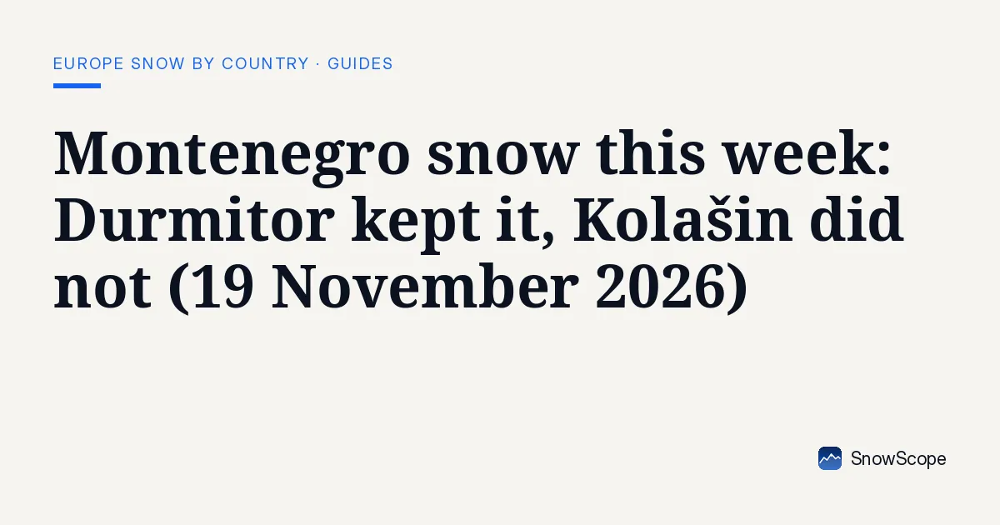
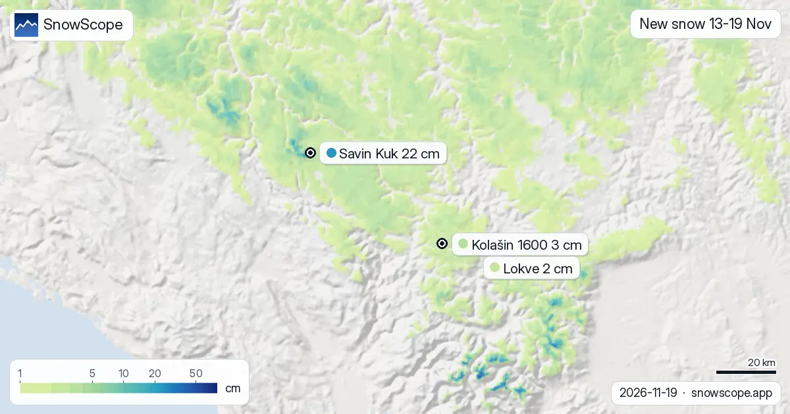
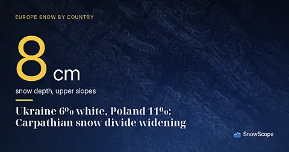

Montenegro snow this week: Durmitor kept it, Kolašin did not (19 November 2026)
Montenegro's two ski regions had very different weeks. On Durmitor, the upper slopes of Savin Kuk above Žabljak collected about 22 cm of new snow between 13 and 19 November, in small doses almost every day, and still have 6 cm on the ground today. On Bjelasica, Kolašin 1600 and Kolašin 1450 got only a few centimetres, and both are bare on Thursday 19 November.
See the live snow forecast for Montenegro in the SnowScope appSnow depth, powder alerts and the 3D map, free.
Durmitor: a little snow, almost every day
Savin Kuk, the ski mountain right above Žabljak with lifts up to 2,175 m, had no big storm this week but a long run of small ones. Its upper slopes picked up about 5 cm on Friday 13 November, 5 cm on Saturday 14 November, 3 cm on Sunday, 6 cm on Monday 16 November and 1 cm on Tuesday, then about 2 cm more today. Added up, that is 22 cm in a week.
Snow on the ground went up and down with it. A week ago, on 12 November, there were 19 cm left from earlier falls. Mild weather took that down to 7 cm on 13 November; the new snow then rebuilt it to 18 cm by Tuesday 17 November. Since then it has settled again, to 11 cm on Wednesday and 6 cm today.

Bjelasica: Kolašin is waiting
On the other side of the Tara canyon, Bjelasica stayed mostly outside the snow. Kolašin 1600, whose lifts climb to 2,028 m, had 7 cm on its upper slopes on 12 November, then only 3 cm of new snow on Saturday 14 November. Its cover shrank from 4 cm on 14 November to 2 cm on 15 November and 1 cm on Tuesday 17 November, and the slopes have been bare since Wednesday 18 November.
Kolašin 1450, on the southern side of the same mountain with lifts up to 1,915 m, never had more than 1 cm this week. Lokve, near Berane, stayed bare as well. The chart below shows the gap between the two regions day by day.
The towns: green on both sides
At town level, Montenegro had only one white morning this week. The weather station at Pljevlja, at 788 m in the north, measured 4 cm of snow on Saturday 14 November, gone by Sunday. Nikšić, at 647 m, stayed snow-free all week, and so did Podgorica and the coast.
Žabljak town sits at about 1,450 m, higher than any of those stations, so a thin cover there today is plausible, but the white you can count on is on the upper slopes of Savin Kuk.
What it means for a ski trip
Six centimetres on Savin Kuk is a postcard, not a ski base. Montenegrin ski areas need a deep, settled cover before they open lifts, and in a normal season that comes in December. If you are planning a trip, treat this week as a sign that Durmitor is catching the early snow, and follow the ski centres' own channels for opening news.
For walkers, the high trails around Žabljak and Crno jezero now have patchy snow and icy shade. Proper winter boots are a good idea above the town.
The week ahead
The next days stay quiet. Friday 20 November is dry everywhere. Saturday 21 November could bring a few centimetres to the top of Kolašin in the highest forecast, up to 4 cm, but the middle forecast keeps it dry. Monday 23 November is the most likely snowy day: Savin Kuk 1 to 3 cm, with 3 cm in the middle forecast, and Kolašin 1600 1 to 4 cm, middle 2 cm.
Thursday 26 November is the wild card: the highest forecasts give 5 to 6 cm on both mountains, the middle forecast none. For the whole week from 20 to 26 November the middle forecast adds up to about 4 cm on Savin Kuk (4 to 7 cm) and on Kolašin 1600 (2 to 10 cm), and about 2 cm on Kolašin 1450 (2 to 9 cm).
How Montenegro compares
Across the region, Montenegro sits in the middle this week. Slovenia's high Alps are clearly ahead, with fresh snow today. Croatia and Serbia had more snow last weekend than Bjelasica, but on lower mountains, and it melted within days. Bosnia and Herzegovina, just across the border from Durmitor, is bare too and waiting for snow later next week.
Durmitor's height is its advantage: of all the ski mountains in Montenegro, Serbia and Bosnia and Herzegovina, it is one of the very few still white today.
Tips for skiers
- Snow today: about 6 cm on the upper slopes of Savin Kuk (Žabljak); Kolašin 1600 and 1450 are bare.
- Most likely snowy day ahead: Monday 23 November, a few centimetres.
- Follow the ski centres' own channels for opening dates.
More maps (external sites)
- Live snow map on SnowScope
- Bosnia and Herzegovina snow report, 19 November
About these numbers
Snow on the slopes: the upper slopes of each ski area on SnowScope's daily snow map. Measured snow: weather stations, read at 07:00 local time. Coming snow: the lowest, middle and highest forecast for each resort's top lift.
Cite this report
For research, teaching or the press: the numbers and charts are free to reuse under CC BY 4.0 with this citation.
SnowScope (2026), Montenegro snow this week: Durmitor kept it, Kolašin did not (19 November 2026), https://snowscope.app/blog/en/2026/11/montenegro-snow-zabljak-durmitor-kolasin-19-november-2026.html, accessed 2026-11-19
SnowScope (Atlas Labs). (2026, November 19). Montenegro snow this week: Durmitor kept it, Kolašin did not (19 November 2026). SnowScope snow reports. https://snowscope.app/blog/en/2026/11/montenegro-snow-zabljak-durmitor-kolasin-19-november-2026.html
BibTeX
@misc{snowscope2026montenegrosnowzabljakdur,
author = {{SnowScope (Atlas Labs)}},
title = {Montenegro snow this week: Durmitor kept it, Kolašin did not (19 November 2026)},
year = {2026},
month = nov,
howpublished = {\url{https://snowscope.app/blog/en/2026/11/montenegro-snow-zabljak-durmitor-kolasin-19-november-2026.html}},
note = {Published 2026-11-19 17:29 UTC; accessed 2026-11-19}
}· CC BY 4.0 · Methods, data and tools →
Follow Montenegro
Free: a message when fresh snow is coming, and the forecast every morning.
More snow reports

Ukraine's snow cover dropped to 6% today as the Carpathians melt back. Poland holds twice the white share. Both countries face fresh snow by Friday.

Slovakia's snow cover dropped to 1,830 km2 today. Snow sits mostly above 1,200 m; the High Tatras and Low Tatras lead with 8 cm of new snow in 72 hours.

79% of Sweden's ski areas show snow today. Upper slopes at Björkliden and Abisko carry 131 cm. The Hemavan fjells led the past 72 hours with 15 cm of fresh snow.